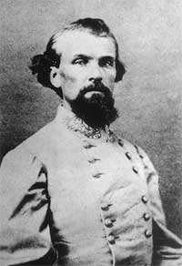
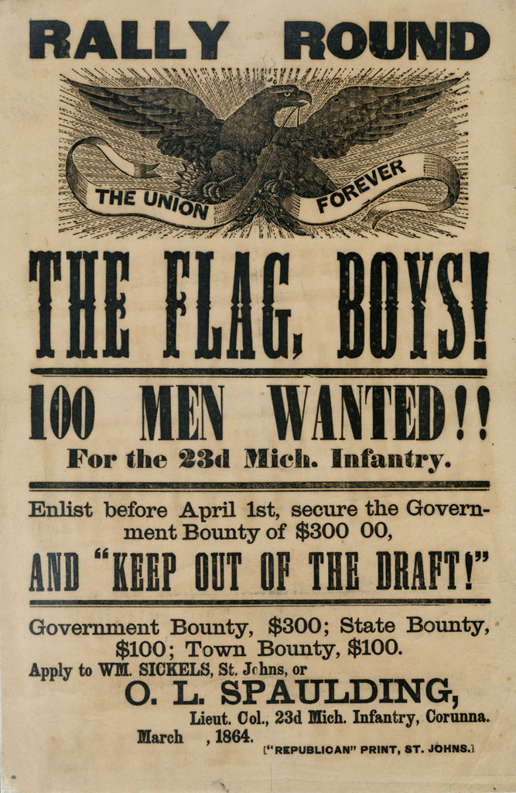
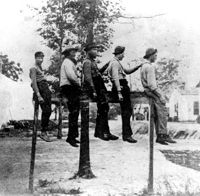
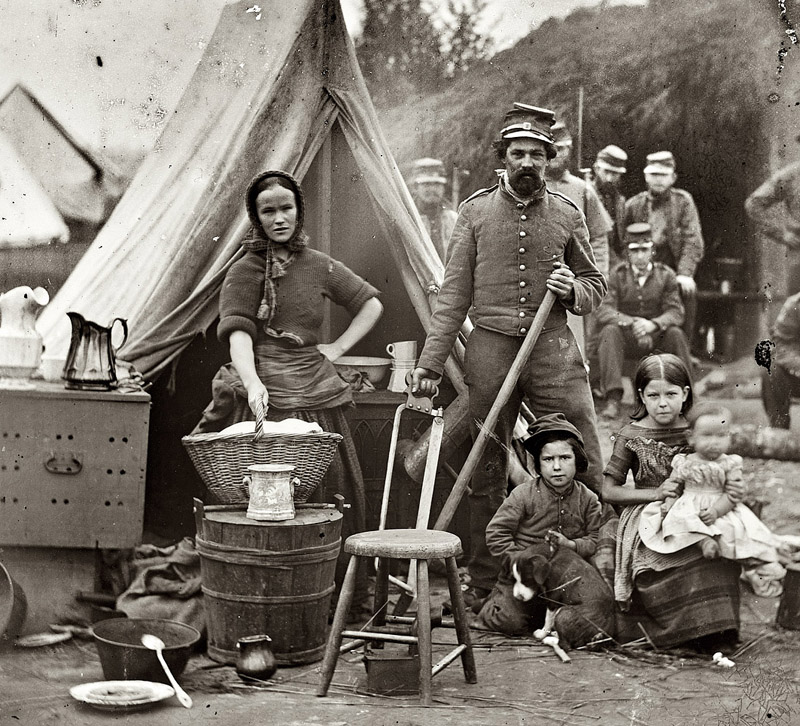
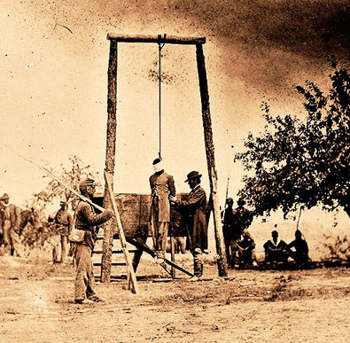

|
Nowhere is the difference between Civil War soldiers and
their modern-day counterparts more striking than in the way
they became soldiers in the first place. Today's soldiers
enlist in a relatively bureaucratic army that whisks the new
recruits away to training depots to be drilled into the
interchangeable human parts that are then distributed
throughout the huge organization. Civil War soldiers, by
contrast, signed up along with their friends in their local
community and in a hometown company that would keep those
friends together. The company would later take on a formal
designation (a letter) within a formally numbered regiment,
but it would still be at heart a band of men and boys with
home-grown names meant to sound military--the Raymond
Fencibles, Rockford Zouaves, Rome Light Infantry, Tioga
Mountaineers, and hundreds of others.
Civil War soldiers received scant training. A regiment
was lucky to have among its officers a few who had
experience in the regular army or who had served (generally
in equally ill-trained volunteer regiments) in the Mexican
War or Seminole Wars. Often the colonel was the only one
with such experience and sometimes even the regimental
commander might be as green as any of his recruits. To make
matters worse, the nineteenth-century American militia
system, under which the Civil War regiments were organized,
provided that officers all the way up to the rank of colonel
should be elected by their troops. This system was
detrimental in several ways. First, there was no reason to
expect the green recruits, innocent of all knowledge of war
or military ways, to select the best qualified men to lead
them. On the contrary, the new volunteers seemed prone to
vote for the least qualified men, perhaps because they could
identify with them. West Point graduate and colonel of the
41st Ohio William B. Hazen remarked that among the newly
elected officers, "as a rule, fitness was found to vary
inversely with rank."
Second, while a given company was in the process of
forming, before its formal elections were held its temporary
officers dared not attempt to impose military discipline for
fear of irritating their soldiers and ruining their chances
to have their rank confirmed. Even after the officers were
elected, the pernicious effect continued as the new leaders,
only recently elevated from among their comrades by those
same comrades' votes, often lacked the respect needed to
enforce discipline. In short, many factors combined to make
the transition of mid-nineteenth-century American youth into
soldiers slow, inefficient, and never fully complete.
Southern Enlistment
Hatred for the North received a tremendous boost from the
prevailing agitation in favor of secession. The fire-eating
element, made up largely of country editors, preachers,
lawyers, and politicians-on-the-make, was the most vocal and
eloquent. Recrimination and name-calling in private
conversation, in public meeting, in editorial columns, from
the professor's desk and country pulpit, produced a tide of
emotion in the early months of 1861 that reached all
sections and all classes ... [and this ] contributed greatly
to the wave of volunteering which swept over the South
during the first year of conflict.
It would be misleading ... to give the impression that
all who took up arms in 1861 were moved by hatred of
Yankees, or that all who expressed hostility felt any
considerable depth of antipathy. Later events proved the
contrary. The dominant urge of many volunteers was the
desire for adventure. War, with its offering of travel to
far places, of intimate association with large numbers of
other men, of the glory and excitement of battle, was an
alluring prospect to farmers who in peace spent long lonely
hours between plow handles, to mechanics who worked day in
and day out at cluttered benches, to storekeepers who
through endless months measured jeans cloth or weighed
sowbelly, to teachers who labored year after year with
indifferent success to drill the rudiments of knowledge into
unwilling heads, and to sons of planters who dallied with
the classics in halls of learning.
Long before Virginia seceded restless boys at the state
university and at Washington College raised the Confederate
flag on their respective campuses. At the University of
Mississippi a company was recruited on the campus, and the
faculty advanced the date of examinations so that students
could be off to the war. The Centenary College faculty
|

Lt. Gen. Nathan Bedford Forrest
was one of many prominent Southerners who raised their
own regiments during the Civil War.
|
assembled on October 7, 1861, for the purpose of opening the
fall session, but "there being no college students and few
preparatory students," the dispensers of learning had to go
home. Opposite the minutes of this futile session in the
faculty record book the secretary splashed in bold script
diagonally across the page this entry: "Students have all
gone to war. College suspended, and God help the right."
There was also a large group of those who volunteered not
from any great enthusiasm, but simply because enlistment was
the prevailing vogue. Scions of leading families rode about
the country organizing companies for their command, thus
adding the weight of social position to that of patriotism.
Community belles offered their smiles and praise to men who
joined the ranks of "our brave soldiers," but turned with
the coolest disdain from those who were reluctant to come
forward in the defense of Southern womanhood. In some
communities young men who hesitated to volunteer received
packages containing petticoats, or were seized by boisterous
mobs and thrown into ponds. Thousands of persons indifferent
to enlistment, and many who were downright opposed to it,
were swept into the ranks in 1861 by the force of articulate
popular pressure.
Henry M. Stanley, famous after the war as the searcher
for Livingstone in Africa, is a case in point. Of English
birth and only recently established in this country, he was
temporarily living in Arkansas at the outbreak of war. He
volunteered simply to follow the example of his
acquaintances, and to avoid social ostracism. After fighting
bravely at Shiloh he was captured. When offered release from
prison in return for Federal service, he joined the Yankees
and fought for some time against his erstwhile comrades. And
he evidently suffered no qualms of conscience for his
turncoating.
Men so indifferent as Stanley, however, formed only a
small minority of the Confederate volunteers. And even
those, once they had "joined up," shared in most cases the
prevailing desire to come to blows with the Yankees, and
that quickly. Almost everyone seemed to think that the war
would be decided by a battle or two in Virginia or Kentucky;
it was necessary therefore, to get to the fight with
dispatch or run the risk of not making it at all.
Northern Enlistment
The South's attack on Fort Sumter fell like a thunderclap
on the country north of Dixie. True, there had been talk of
war, especially since the secession of the cotton states and
the organization of the Southern Confederacy, but the
agitators, consisting mainly of politicians, journalists,
preachers and reformers, many of whom were on the make, were
relatively few. A substantial portion of the population
still hoped for a peaceful solution of the sectional crisis
even after Jeff Davis set up his rival government.
Fort Sumter changed all this. The flag had been
affronted. Men wearing the American uniform had been forced
|

Early in the Civil War, there was little
difficulty finding enough volunteers for the army. By 1863,
it was necessary to advertise and to offer enlistment bonuses.
|
by hostile fire to surrender a Federal fort and match out in
acknowledged defeat. And with that humiliating incident
peaceable secession lost all respectability. The die was
cast.
Lincoln's request for troops was in a sense an
anticlimax. The roar of cannon at Charleston, like the crash
of bombs eighty years later at Pearl Harbor, was the
country's call to arms.
During most of the war the raising of troops was a slow
and painful process. But in the weeks following Fort Sumter
the opposite was true. From Lake Superior to the Ohio, from
Maine to Minnesota, and even from far-off California men
rushed to arms with camp-meeting fervor. "Everybody eagerly
asks everybody else if he's going to enlist," wrote a
Detroit reporter on April 19, and the same might have been
said of almost any other town or city in the North.
The tremendous surge of patriotism manifested itself in
various ways. In Bangor, Maine, schoolgirls pounced on a boy
who came among them wearing a palmetto flag [the flag of
South Carolina] and destroyed the despised emblem. At
Pembroke, Maine, a lawyer of alleged Southern sympathies was
threatened with a ducking in a river, and at Dexter, Maine,
a group of volunteers "rode a Mr. Augustus Brown ... on a
rail for ... saying that he hoped every one of them would be
shot." Elsewhere Southern sympathizers, real or imagined,
were pelted with rotten eggs or otherwise put in their
places, And if traitors could not be found, patriots full of
excitement and liquor often fell to fighting among
themselves.
The women were the most spirited of patriots. Usually
their activities consisted of displaying flags, singing
martial songs, raising funds and making clothing for the
volunteers. But occasionally they chose more aggressive
roles. The ladies of Skowhegan, Maine, for example, on a
Saturday afternoon in April rolled out the village artillery
piece and treated their neighbors to "a salute of
thirty-four guns.
For males the order of the day was volunteering, and the
fever extended to all ages and classes. At Shenango,
Pennsylvania, the young boys organized a "company," elected
a thirteen-year-old captain and held weekly drills in the
schoolyard to the accompaniment of a dinner-bucket drum
corps. And in Belfast, Maine, thirty-odd veterans of the War
of 1812 responded to Lincoln's initial call by forming
themselves into a company and tendering their services to
the state.
Nowhere was the war spirit more rampant than in the
classrooms. At Bowdoin College the students on hearing of
Sumter's fall rang the chapel bell, displayed the national
colors, defiantly waved a skull-and-crossbones banner and
shortly began daily drills on the campus. To Oxford, Ohio,
Ozra J. Dodds, a senior in the college, rose in the chapel
and proposed organization of a University Rifle Company.
Within a few minutes 160 students and local boys signed up
for service in what was to become Company B, 20th Ohio
Volunteers. Girls of the neighboring female college, not to
be outdone, set themselves to making red shirts, flannel
underclothing and a flag for the volunteers.
From the University of Wisconsin a student wrote his
parents on April 20: "Madison is in a great state of
military excitement. The fever has penetrated the University
walls. Seven of the boys have enlisted in the Governor's
Guards." Four days later he reported the dismissal of his
geometry class "to see the soldiers off." At the University
of Michigan five companies were organized within a fortnight
of Sumter's surrender.
Flag Presentations
When Americans North and South raised regiments for the
army and sent them to war, they saw the soldiers off with
almost identical ritual and celebration. The population at
large wanted their soldiers to believe they represented all
of them. The soldiers of 1861, after all, were
volunteers--independent and rational citizens freely

Flag of the 2nd Iowa Cavalry
|
choosing to defend American ideals. In a sense, the
soldiers' reputation would become the home folks' reputation
as well. Nothing made this clearer than the ritual of flag
presentation observed North and South. Customarily,
particularly in the early stages of the war the ladies of
the community would get together to sew a flag for their
boys, which would be presented to the hometown company in a
public ceremony.
This ceremony became stereotyped early in the war--a
speech given by a leading citizen, a reply by the company
commander, and perhaps a picnic or banquet. Confederate
Colonel C. R. Hanleiter's acceptance address is typical of
the genre. "Their defense of this Flag--the insignia of our
Nationality, and the contribution of warm hearts devoted to
the cause of our section," the colonel proclaimed, "shall
attest how well the 'Jo Thompson Artillery' acquit
themselves in the momentous struggle." He promised those who
made the flag that it would "be cherished by us as one of
the most sacred mementoes of Home; and when it waves over
far distant fields, it will remind us of the loved ones left
behind." The men of the regiment would "plant this Flag on
the field of carnage" and maintain its honor always.
Hanleiter's address reveals something of the significance
of this often repeated ritual. The flag itself was the
emblem of the community that sent companies and regiments
into the field. These units were almost always composed of
men from a single town or county; in a very real sense they
represented their communities. Their flags linked them to
their homes.
Furthermore, the flags tied the soldiers to an element of
society they had left behind when they marched to war. The
flag, made by the women of the community, was something to
be protected much as they thought their wives and mothers
should be protected. If the men left their communities to
protect their homes, as many of them insisted they did, they

Flag of the 16th North Carolina infantry
|
brought something of their homes with them into battle. The
flag was the physical tie between the home life they had
left and fought for and the war into which they were
plunged. In Civil War battles the importance of advancing
one's flag and defending it from capture--and, conversely,
capturing enemy flags--indicates a devotion to flags far
beyond what military rationality might seem to demand.
Finally, the importance of the individual flag, presented
to them by their friends and families, takes on additional
meaning when one considers how often men's patriotism was
expressed not in terms of political discourse but simply in
terms of the flag. Many a Northern soldier said he went to
war to fight for the flag, the emblem of a nation. Philip A.
Lantzy announced his enlistment to his parents by saying, "I
am Gone to Fight for the Stars and Stripes of the Union....
I think it is gods will that the Rebels Should be made come
under our Stars and stripes." Whatever these men were
fighting for seems to have been better expressed in material
symbols than in reasoned discourse.
Military Discipline
Americans found military regimentation hard to accept.
North or South, the soldier of the 1860s was most likely an
independent farmer or a farmer's son. This work had been
regulated by the weather, the cycle of the growing year, and
the remote but all-important authority of the market. The
authority immediately over him was personal--not the
"feudal" authority of the planter, but the patriarchal rule
of a father or an older brother who bossed him until such
time as he could set up his own farm, and whose authority
derived from his place in the family. Besides his relative
freedom from discipline in the workplace, the volunteer had
been brought up in a political culture that celebrated
personal autonomy and democracy. In the North, of course,
the Republican Party was based largely on the defense of
free labor and free men; and in the South the Democratic
Party, with its sometimes paranoid denunciations of
corruption and with its thoroughly egalitarian rhetoric,
outlived the commercially oriented Whig Party. Finally,
American political thinkers had always viewed the military
with suspicion; a Confederate soldier could still use
eighteenth-century terminology and refer to an officer as a
member of the old "standing army."
lf regimentation was difficult for most Americans of the
1860s to bear, it was particularly onerous for a Southern
white man. For him, subordination and regulation were not
simply abstractions in a republican demonology. He had seen
them during his life--perhaps every day. The rules and
restrictions of the army reminded the Confederate of the
humiliation of slavery and of the degraded position that
blacks held in his society.
Southerners of all classes referred to military
discipline as a form of slavery. Edwin Fay, a Louisiana
soldier and perpetual grumbler, had not been in the
Confederate army long when he decided, "No negro on Red
River but has a happy time compared with that of a
Confederate soldier." One regulation in particular drew the
ire of Fay and other Confederates: when a soldier wanted to
leave camp he had to obtain a pass. The spectacle of white
|

Civil War punishments tended to inflict pain,
or humiliation, or both. Here, five disobedient Southerners are
compelled to "ride the rail," a penalty that was both difficult
and embarrassing.
|
men carrying passes drew the amused attention of at least
one Southern slave and probably more. Sergeant C. E. Taylor
wrote his father in July 1861 what a black in Corinth,
Mississippi, said after he witnessed a guard demand to see
Taylor's pass. "He said it was mighty hard for white folks
now. He said he had quit carrying a pass and his master had
just commenced to carry them." J. C. Owens summed up the
resemblance between slavery and soldiering when he wrote, "I
am tired of being bound up worse than a negro."
Northerners, too, could feel the comparison between the
soldier and the slave. One soldier wrote from Virginia, "We
keep very comfortable for soldiers. But it [is] nothing like
white living." Allen Geer became homesick contemplating the
difference in his life after enlisting: "yesterday a
freeman--today a slave." The true difference between his
slavery and that of slaves in the South was that his
obedience was, in a sense, not coerced. "A Sense of duty and
patriotism made me obedient to all the discipline."
Besides the image of the slaves, men used that of the
machine to explain their position in the army. One war-weary
Northern officer wrote his mother, "The interest l once took
in Military is almost gone. I do my duty like a machine that
has so much in a day to do anyway." One veteran remembered
that the doctor in the hospital looked upon his patients as
"so many machines in need of repairs." He explained, "In War
men are looked upon and considered as so many machines. Each
machine is expected to perform a certain amount of service.
If the machine becomes weakened or impaired by service, care
is taken that it be mended and restored so that it may again
do its duty~ But if, in the arduous service and dangers to
which it is exposed, the life or moving force is destroyed,
then a trench and covering of earth hides the remains, and
that is all. This, of course, looks very heartless, but War
is relentless and cruel, and so long as War will last, and
men will take up arms against one another, this State of
things will continue." The machine and the slave were two
metaphors for entities without wills of their own. The
soldier was a third. But the machine goes beyond the slave
and soldier: it is not even human.
Soldiers and Their Communities
In many ways American armies during the Civil War
contravened normal military practice. The process by which
men are turned into soldiers--one is tempted to say "reduced
to soldiers" involves removing them from the larger society.
They wear distinctive dress, distinctive haircuts, submit to
unusual drill, discipline, and ritual, are commanded by
officers. They are literally regimented. Armies master
people by subjecting them to unfamiliar environments and
thus they become soldiers. Armies work by setting men apart.
To a large extent, Civil War armies succeeded in doing
these things. The volunteers did become soldiers. But the
transformation from civilian to soldier was rarely
completed. One reason for this is that in some ways the
company--the basic military unit--functioned as an extension
of the soldier's home community. In most ways a soldier's
company was the army for that soldier. In 1861, a Union
which went to war by creating a centralized army would have
been unrecognizable to the soldiers. The local nature of the
companies and regiments faithfully mirrored the body politic
at large.
For new recruits, the army should be a terrifying
institution; soldiering should be different from anything
they have known before. Like all institutions, established
armies have traditions of their own. A Scottish recruit
|

When in camp, soldiers tried to re-create
their home life as much as was possible.
|
coming to a British regiment or even an American teenager
entering the cadet corps at West Point would find himself
bound--and inspired--not only by formal discipline but by
the powerful traditions, history, and myths of his new home.
These traditions too play their role in transforming
civilians into soldiers. But in most cases Civil War
regiments had no such traditions. These were new regiments,
making up their regimental traditions.
Civil War companies were first and foremost military
institutions, but they were not exempt from the culture of
the nineteenth-century American volunteerism that produced
them. Sometimes soldiers insisted that their company--their
new home--serve other functions. They might form societies
"for mutual improvement in cultivating the mind" or for
debating important questions of the day, such as whether or
not "education has more influence over the mind of man than
money." Bible classes held in an Indiana regiment paid
special attention to the conflicting claims of Calvinism and
Arminianism. Soldiers would donate money to buy their
regiments libraries, organize Christian associations, or
hold Sunday prayer meetings--all as if they had read
Tocqueville. Companies of Union volunteers, then, behaved
much as other American fraternal organizations. The average
Civil War company began with all the discipline of a lodge
of Elks.
Officers rapidly became aware of the problem that the
local nature of military units posed for discipline. In 1861
Major Charles S. Wainwright noted "how little snap men have
generally." His regiment's officers, even though they were
well thought of, could not "get fairly wakened up." "Their
orders come out slow and drawling, then they wait patiently
to see them half-obeyed in a laggard manner, instead of
making the men jump to it sharp, as if each word of the
order was a prod in their buttocks." He blamed this state of
affairs in part on customary small-town indolence; he also
blamed the process by which companies were organized--"the
officers having raised their own men and known most of them
in civil life." Even soldiers themselves might identify this
as a problem. When mismanagement by the quartermaster led to
a shortage of rations in one regiment, one soldier, who a
few weeks earlier had complained of strict discipline,
attributed the inefficiency to the fact that affairs were
run on a volunteer basis: "The officers have no dignity &
the men no subordination."
The threat to discipline posed by the community came from
other than just the soldiers themselves. The community kept
in close touch with the companies it sent to war. Newspaper
articles reported their exploits, homefolk sent and received
letters, soldiers returned home on furloughs, and civilians
even visited their friends and family in the army. The
reinforcement of local values that this constant
communication permitted could run counter to military
values. When Captain John Pierson told his wife that his
soldiers were probably writing home he was a tyrant, he was
not alone. Officers usually planned to return to their
communities when the war was over; the way they treated
their neighbors and their neighbors' sons would be
remembered.
As unfamiliar as the military experience was to most
northern soldiers, the presence of friends and even
brothers, uncles, or cousins, the frequent communication
with those at home, and the ad hoc nature of the volunteer
army served to make it more familiar than is typical of
armies. Small-town mores were an impediment to military
discipline as classically understood. The constant reminders
of home provided men with an alternate set of values and
diminished the authority of their officers--men who were
equally imbued with civilian values in any case. Yet at the
same time smalltown mores reduced soldiers' military
efficiency, they also worked as the glue of this citizen
army. If community values helped make the Union soldier a
difficult one to command, they also helped make him as good
a soldier as he turned out to be.
First, soldiers believed that they were fighting for
their families and communities. The homefolk had sent them
to war. Rallies, public meetings, exhortations from the
press and pulpit had encouraged the teenagers and men of the
North to enlist. The question why parents and wives seemed
so eager to sacrifice their menfolk is a troubling one, but
it is clear that their influence helped persuade many men to
volunteer. To be a good son, a good brother, a good husband
and father, and to be a good citizen meant trying to be a
good soldier.
The call of home could, of course, unravel a soldier's
morale. Silas W. Browning confessed to his wife, "I have not
shed tears but twice since I left Home & that was when I
received your letters." A preacher's sermon on "the dear
ones at home" could start veterans crying. A New Jersey
soldier claimed that in the trenches around Petersburg
soldiers literally died from homesickness. But as long as
soldiers were sure that those they most missed believed in
them and the cause for which they fought, their love for
home stimulated their support for the Union.
Second, soldiers knew that their behavior while in
service was monitored by the folks back home. The army
provided little escape from the prying eyes of small-town
America. News of a man's conduct, moral and military, was
too easily sent home. And men took rumors and hometown
opinion seriously. One soldier wrote his parents that he and
"the other boys were amazed that you heard that we were
|

Soldiers who deserted and were caught
risked harsh punishments, including execution, as with this
deserter.
|
guilty of unworthy conduct." Denying the story, he asked who
was spreading it. On the other hand, soldiers were not
particularly reluctant to spread rumors themselves. One
mother who warned her son always to speak respectfully of
his officers received a defiant answer: "I intend to write
just as I think they deserve and tell the truth and nothing
but the truth."
Bravery was a virtue that would earn a soldier the
respect of his community back home, not just his company,
and cowardice its contempt. A man who skulked or ran faced
not just ridicule from his comrades but a soiled reputation
when he returned to civilian life. George Waterbury first
tried to get put on the sick list and then deserted to avoid
fighting in the Chancellorsville campaign; a fellow soldier
sent the news back to Connecticut. When one captain dodged
battle in 1862, a soldier under him broadcast his conduct:
"He contrived to stumble, then gave out he was wounded in
the knee, and called for a stretcher, was put on it, and
carried a little ways when the carriers rested and the
shells falling a little too thick for the Captain, he told
them men to hurry up which they did not do, when up he
jumped and beat the whole to the Hospital, after which we
never saw him until we got upon this side of the
Rappahannock."
Soldiers demanded courage of their officers in a way they
rarely did of their fellow soldiers. Soldiers who had
enlisted under the company commanders had a right to feel
particularly betrayed if their captains proved cowardly.
After all, the officer who formed a company among his
friends and neighbors promised them either implicitly or
explicitly--usually the latter, and in most grandiloquent
fashion--to lead them into battle. James K. Newton wrote
home that the reputation of his captain's bravery at Shiloh
"was all a hoax." On the contrary, the captain had
disappeared when the battle began.
During combat, could men think of their reputations? The
answer is probably yes. Men wrote home how they thought of
their loved ones even in the cannon's mouth; men did die
with the names of their beloved on their lips. The desire to
live up to the expectations of those at home reinforced
natural bravery and military discipline in helping determine
men's conduct on the battlefield. Leander Stillwell
remembered that when his regiment turned and ran in his
first battle, he kept thinking, "What will they say about
this at home?" Nonetheless, combat has its own compulsions.
The good opinion of the folks back home was probably more
important in men's decision to continue their service.
While courage in battle resulted from the moment's
excitement, it took considerably more reassurance to stay in
the army day after day, year after year. There were military
compulsions; deserters could be shot. Many deserted
successfully, however, and the so-called "bounty-jumpers"
made a career of enlisting and deserting. The continual
reassurance that those back home approved of one's service,
a reassurance provided by letters--and painfully missed when
letters did not come--was crucial to the soldiers. As long
as the communities of the North supported the war effort,
there would be northern soldiers in the ranks of the Union
army.
Source: Steven C. Woodworth, ed., The Loyal, True, and Brave
(Wilmington, DE: Scholarly Resources, Inc., 2002), 1-22.
|